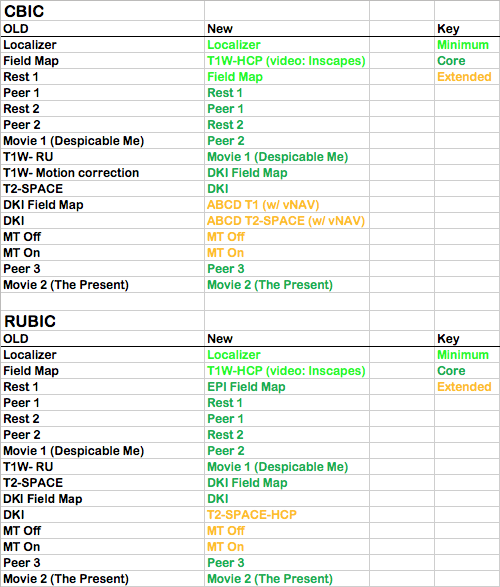

Data Release 3.0¶
RELEASE DATE: 1/31/2018
RELEASE CONTENTS
- Phenotypic data
- New datasets: n = 254
- Total datasets: n = 1135
- Neuroimaging data
- EEG
- New datasets: n = 188
- Total datasets: n = 947
- MRI
- New datasets: n = 202
- Total datasets: n = 977
- EEG
PROTOCOL ADDITIONS
- Citigroup Biomedical Imaging Center (CBIC) at Weill Cornell Medical College- We are pleased to announce the addition of CBIC as a scan site for the Healthy Brain Network. Located in the Upper East Side of Manhattan, New York, this center will serve as a major scan site with coverage of participants from the Manhattan and nearby areas to the east (e.g., Brooklyn).
- New phenotypic assessments
- Adaptive Cognitive Evaluation (ACE)
- Inventory of Callus-Unemotional Traits Self-Report (ICU-SR)
- Temporal Discounting Task
- More detailed data from the NIH Toolbox (previous releases include only scores)
- Inclusion of fitness protocol of aerobic capacity for participants over age 12.
PROTOCOL DISCONTINUATION
- Phenotypic assessments
PROTOCOL IMPROVEMENTS
- Integration of Prospective Motion Correction (In Progress)- The most commonly cited challenge for the collection of data from children and hyperkinetic clinical populations is head motion. As part of an effort to minimize the impact of head motion on the collection of data from HBN participants, we have begun the process of adding prospective motion correction to our protocols. Specifically, the Align sequence used by the NIH ABCD Study was added at the CBIC site for the T1 and T2-SPACE images. For the purposes of maintaining continuity, and facilitating comparison of results, we have maintained acquisition of the initial T1 image at CBIC as well. Addition of the T1 at RUBIC is pending a port of the sequence to VB19A.
File identifiers:
- T1 – HCP-based Sequence (no VNav)
- T1 – ALIGN (VNav with and without surface coil intensity correction)
- T2–SPACE HCP-based Sequence (no VNav)
- T2-SPACE – ALIGN (VNav with and without surface coil intensity correction)
- Changes in MRI Protocol. Effective January 22, 2018, we have changed the order of scans in the HBN protocol to maximize yield. Scan types are now classified as minimal, core and extended, to reflect priority. These changes will be reflected in Release 4.0. Below we depict the change in protocol: 
DATA ADDITIONS
- Voice transcription data. Release 3 data include transcriptions of voice recordings taken after the MRI scan, where participants described the plot of The Present and their reaction to the film. These files (.txt, n = 232) will be available in the Document Repository on LORIS and under Study Docs in COINS.
DATA FIXES
- Diagnostic Data. Users should note that the assessment "ConsensusDx" has been changed to "Diagnosis_ClinicianConsensus" in order to address confusion with finding participant diagnostic information. In addition, diagnostic data from the computerized Kiddie Schedule for Affective Disorders and Schizophrenia (KSADS) will be available as "Diagnosis_KSADS," providing another option for diagnostic data. While for most participants, diagnoses will be consistent between the clinician consensus and the KSADS results (the clinician consensus diagnosis is determined from the KSADS results, as well as from other assessments), the clinician consensus diagnosis data include a wider range of diagnoses, including autism and learning disorders.
DISTRIBUTION NOTE
- S3 Directory Structure. HBN neuroimaging data are now available in both compressed (.tar.gz) and uncompressed format in S3, under the directories fcp-indi/data/Archives/HBN and fcp-indi/data/Projects/HBN, respectively. Data will still be available for direct download on the neuroimaging downloads page, but only for compressed files.